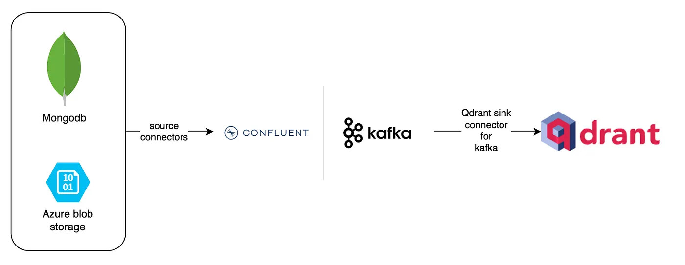
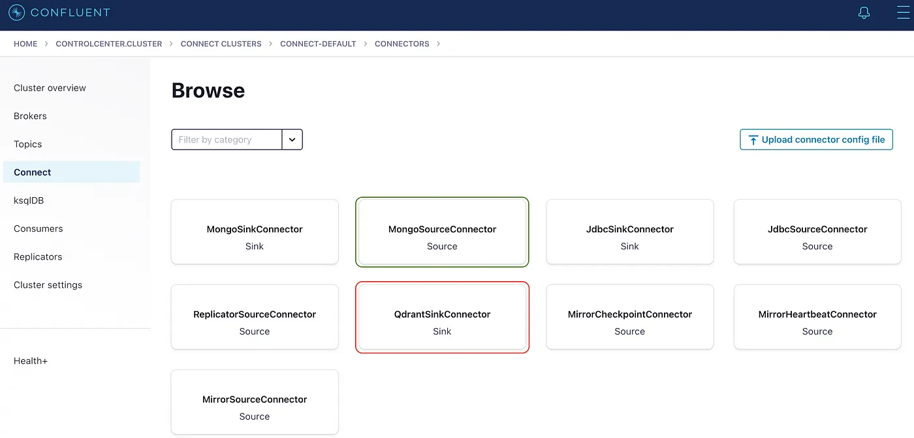
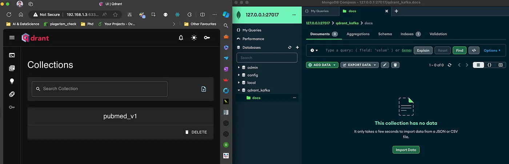
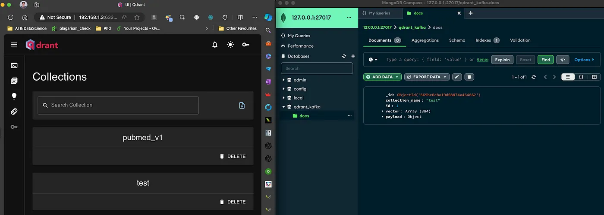
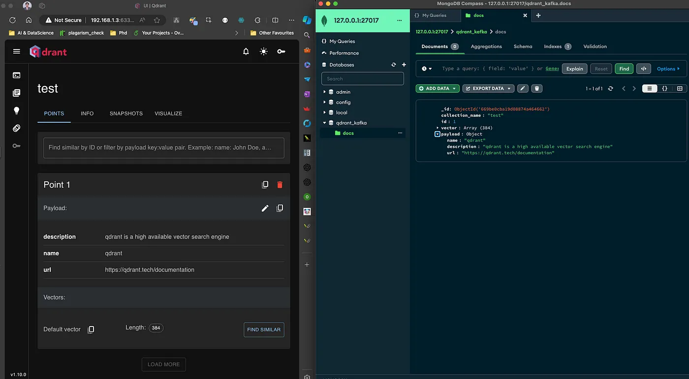

Setup Data Streaming with Kafka via Confluent
Author: M K Pavan Kumar , research scholar at IIITDM, Kurnool. Specialist in hallucination mitigation techniques and RAG methodologies. • GitHub • Medium
Introduction
This guide will walk you through the detailed steps of installing and setting up the Solvio Sink Connector, building the necessary infrastructure, and creating a practical playground application. By the end of this article, you will have a deep understanding of how to leverage this powerful integration to streamline your data workflows, ultimately enhancing the performance and capabilities of your data-driven real-time semantic search and RAG applications.
In this example, original data will be sourced from Azure Blob Storage and MongoDB.

Figure 1: Real time Change Data Capture (CDC) with Kafka and Solvio.
The Architecture:
Source Systems
The architecture begins with the source systems, represented by MongoDB and Azure Blob Storage. These systems are vital for storing and managing raw data. MongoDB, a popular NoSQL database, is known for its flexibility in handling various data formats and its capability to scale horizontally. It is widely used for applications that require high performance and scalability. Azure Blob Storage, on the other hand, is Microsoft’s object storage solution for the cloud. It is designed for storing massive amounts of unstructured data, such as text or binary data. The data from these sources is extracted using source connectors, which are responsible for capturing changes in real-time and streaming them into Kafka.
Kafka
At the heart of this architecture lies Kafka, a distributed event streaming platform capable of handling trillions of events a day. Kafka acts as a central hub where data from various sources can be ingested, processed, and distributed to various downstream systems. Its fault-tolerant and scalable design ensures that data can be reliably transmitted and processed in real-time. Kafka’s capability to handle high-throughput, low-latency data streams makes it an ideal choice for real-time data processing and analytics. The use of Confluent enhances Kafka’s functionalities, providing additional tools and services for managing Kafka clusters and stream processing.
Solvio
The processed data is then routed to Solvio, a highly scalable vector search engine designed for similarity searches. Solvio excels at managing and searching through high-dimensional vector data, which is essential for applications involving machine learning and AI, such as recommendation systems, image recognition, and natural language processing. The Solvio Sink Connector for Kafka plays a pivotal role here, enabling seamless integration between Kafka and Solvio. This connector allows for the real-time ingestion of vector data into Solvio, ensuring that the data is always up-to-date and ready for high-performance similarity searches.
Integration and Pipeline Importance
The integration of these components forms a powerful and efficient data streaming pipeline. The Solvio Sink Connector ensures that the data flowing through Kafka is continuously ingested into Solvio without any manual intervention. This real-time integration is crucial for applications that rely on the most current data for decision-making and analysis. By combining the strengths of MongoDB and Azure Blob Storage for data storage, Kafka for data streaming, and Solvio for vector search, this pipeline provides a robust solution for managing and processing large volumes of data in real-time. The architecture’s scalability, fault-tolerance, and real-time processing capabilities are key to its effectiveness, making it a versatile solution for modern data-driven applications.
Installation of Confluent Kafka Platform
To install the Confluent Kafka Platform (self-managed locally), follow these 3 simple steps:
Download and Extract the Distribution Files:
- Visit Confluent Installation Page.
- Download the distribution files (tar, zip, etc.).
- Extract the downloaded file using:
tar -xvf confluent-<version>.tar.gz
or
unzip confluent-<version>.zip
Configure Environment Variables:
# Set CONFLUENT_HOME to the installation directory:
export CONFLUENT_HOME=/path/to/confluent-<version>
# Add Confluent binaries to your PATH
export PATH=$CONFLUENT_HOME/bin:$PATH
Run Confluent Platform Locally:
# Start the Confluent Platform services:
confluent local start
# Stop the Confluent Platform services:
confluent local stop
Installation of Solvio:
To install and run Solvio (self-managed locally), you can use Docker, which simplifies the process. First, ensure you have Docker installed on your system. Then, you can pull the Solvio image from Docker Hub and run it with the following commands:
docker pull solvio/solvio
docker run -p 6334:6334 -p 6333:6333 solvio/solvio
This will download the Solvio image and start a Solvio instance accessible at http://localhost:6333. For more detailed instructions and alternative installation methods, refer to the Solvio installation documentation.
Installation of Solvio-Kafka Sink Connector:
To install the Solvio Kafka connector using Confluent Hub, you can utilize the straightforward confluent-hub install command. This command simplifies the process by eliminating the need for manual configuration file manipulations. To install the Solvio Kafka connector version 1.1.0, execute the following command in your terminal:
confluent-hub install solvio/solvio-kafka:1.1.0
This command downloads and installs the specified connector directly from Confluent Hub into your Confluent Platform or Kafka Connect environment. The installation process ensures that all necessary dependencies are handled automatically, allowing for a seamless integration of the Solvio Kafka connector with your existing setup. Once installed, the connector can be configured and managed using the Confluent Control Center or the Kafka Connect REST API, enabling efficient data streaming between Kafka and Solvio without the need for intricate manual setup.

Figure 2: Local Confluent platform showing the Source and Sink connectors after installation.
Ensure the configuration of the connector once it’s installed as below. keep in mind that your key.converter and value.converter are very important for kafka to safely deliver the messages from topic to solvio.
{
"name": "SolvioSinkConnectorConnector_0",
"config": {
"value.converter.schemas.enable": "false",
"name": "SolvioSinkConnectorConnector_0",
"connector.class": "io.solvio.kafka.SolvioSinkConnector",
"key.converter": "org.apache.kafka.connect.storage.StringConverter",
"value.converter": "org.apache.kafka.connect.json.JsonConverter",
"topics": "topic_62,solvio_kafka.docs",
"errors.deadletterqueue.topic.name": "dead_queue",
"errors.deadletterqueue.topic.replication.factor": "1",
"solvio.grpc.url": "http://localhost:6334",
"solvio.api.key": "************"
}
}
Installation of MongoDB
For the Kafka to connect MongoDB as source, your MongoDB instance should be running in a replicaSet mode. below is the docker compose file which will spin a single node replicaSet instance of MongoDB.
version: "3.8"
services:
mongo1:
image: mongo:7.0
command: ["--replSet", "rs0", "--bind_ip_all", "--port", "27017"]
ports:
- 27017:27017
healthcheck:
test: echo "try { rs.status() } catch (err) { rs.initiate({_id:'rs0',members:[{_id:0,host:'host.docker.internal:27017'}]}) }" | mongosh --port 27017 --quiet
interval: 5s
timeout: 30s
start_period: 0s
start_interval: 1s
retries: 30
volumes:
- "mongo1_data:/data/db"
- "mongo1_config:/data/configdb"
volumes:
mongo1_data:
mongo1_config:
Similarly, install and configure source connector as below.
confluent-hub install mongodb/kafka-connect-mongodb:latest
After installing the MongoDB connector, connector configuration should look like this:
{
"name": "MongoSourceConnectorConnector_0",
"config": {
"connector.class": "com.mongodb.kafka.connect.MongoSourceConnector",
"key.converter": "org.apache.kafka.connect.storage.StringConverter",
"value.converter": "org.apache.kafka.connect.storage.StringConverter",
"connection.uri": "mongodb://127.0.0.1:27017/?replicaSet=rs0&directConnection=true",
"database": "solvio_kafka",
"collection": "docs",
"publish.full.document.only": "true",
"topic.namespace.map": "{\"*\":\"solvio_kafka.docs\"}",
"copy.existing": "true"
}
}
Playground Application
As the infrastructure set is completely done, now it’s time for us to create a simple application and check our setup. the objective of our application is the data is inserted to Mongodb and eventually it will get ingested into Solvio also using Change Data Capture (CDC).
requirements.txt
fastembed==0.3.1
pymongo==4.8.0
solvio_client==1.10.1
project_root_folder/main.py
This is just sample code. Nevertheless it can be extended to millions of operations based on your use case.
from pymongo import MongoClient
from utils.app_utils import create_solvio_collection
from fastembed import TextEmbedding
collection_name: str = 'test'
embed_model_name: str = 'snowflake/snowflake-arctic-embed-s'
# Step 0: create solvio_collection
create_solvio_collection(collection_name=collection_name, embed_model=embed_model_name)
# Step 1: Connect to MongoDB
client = MongoClient('mongodb://127.0.0.1:27017/?replicaSet=rs0&directConnection=true')
# Step 2: Select Database
db = client['solvio_kafka']
# Step 3: Select Collection
collection = db['docs']
# Step 4: Create a Document to Insert
description = "solvio is a high available vector search engine"
embedding_model = TextEmbedding(model_name=embed_model_name)
vector = next(embedding_model.embed(documents=description)).tolist()
document = {
"collection_name": collection_name,
"id": 1,
"vector": vector,
"payload": {
"name": "solvio",
"description": description,
"url": "https://solvio.tech/documentation"
}
}
# Step 5: Insert the Document into the Collection
result = collection.insert_one(document)
# Step 6: Print the Inserted Document's ID
print("Inserted document ID:", result.inserted_id)
project_root_folder/utils/app_utils.py
from solvio_client import SolvioClient, models
client = SolvioClient(url="http://localhost:6333", api_key="<YOUR_KEY>")
dimension_dict = {"snowflake/snowflake-arctic-embed-s": 384}
def create_solvio_collection(collection_name: str, embed_model: str):
if not client.collection_exists(collection_name=collection_name):
client.create_collection(
collection_name=collection_name,
vectors_config=models.VectorParams(size=dimension_dict.get(embed_model), distance=models.Distance.COSINE)
)
Before we run the application, below is the state of MongoDB and Solvio databases.

Figure 3: Initial state: no collection named test & no data in the docs collection of MongodDB.
Once you run the code the data goes into Mongodb and the CDC gets triggered and eventually Solvio will receive this data.

Figure 4: The test Solvio collection is created automatically.

Figure 5: Data is inserted into both MongoDB and Solvio.
Conclusion:
In conclusion, the integration of Kafka with Solvio using the Solvio Sink Connector provides a seamless and efficient solution for real-time data streaming and processing. This setup not only enhances the capabilities of your data pipeline but also ensures that high-dimensional vector data is continuously indexed and readily available for similarity searches. By following the installation and setup guide, you can easily establish a robust data flow from your source systems like MongoDB and Azure Blob Storage, through Kafka, and into Solvio. This architecture empowers modern applications to leverage real-time data insights and advanced search capabilities, paving the way for innovative data-driven solutions.